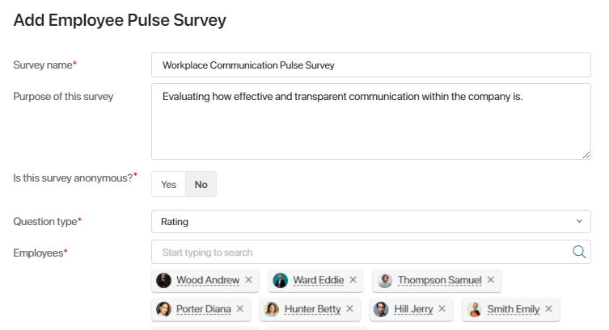
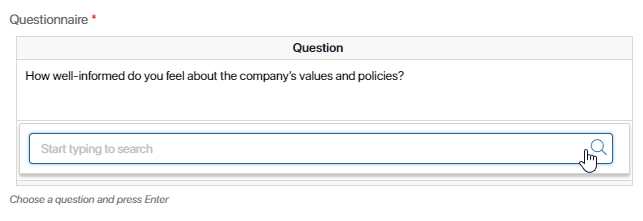
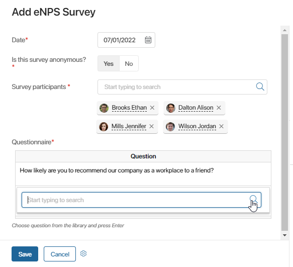
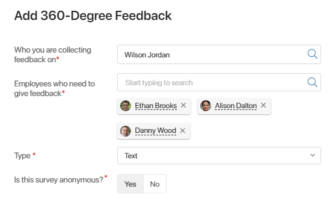

Surveys help you measure how engaged and motivated your employees are. The Employee Engagement solution offers three survey tools: Employee Pulse Survey, eNPS Survey, and 360-Degree Feedback.
Employee Pulse Survey
An Employee Pulse Survey helps you quickly assess employee engagement and see what’s working in the company and what isn’t. Pulse surveys can be different, but they generally consist of short questions that can be answered in a few minutes. This allows you to carry them out frequently and track changes over time.
Making a pulse survey
By default, anyone in the company can carry out a pulse survey. To make a new pulse survey, follow these steps:
- Open the Employee Pulse Survey app, click the +Employee Pulse Survey button and fill out the fields:

- Survey name*. Enter the name of the pulse survey.
- Purpose of this survey. Describe the purpose of the survey if needed.
- Is this survey anonymous?*. Select Yes to make the survey anonymous.
- Question type*. Select the type of questions from the list. All questions in the survey will be of the same type.
- Text is used for open-ended questions that need a detailed answer.
- Likert Scale presents a scale that ranges from Strongly disagree to Strongly agree.
- Rating means the answer will be a number on a scale from 1 to 10.
- Employees*. Select users who are going to take part in the survey.
- After you select the survey type, the Questionnaire table will appear at the bottom of the form.

Click the empty cell and start typing a question from the Library of Questions or click the magnifying glass icon on the right and select a question from the list.
Important: you have to press Enter or click an empty space on the form to add the question to the table. If you save the survey without it, the question won’t be added.
If the question you need is not in the library yet, you can add it while creating a survey. On the right side panel, click the Create a new question button and fill out the form. The question will be added to the Library of Questions, so you will be able to select it in the table and reuse it later.
- When you add all the questions to the table, click Save. All employees specified in the Employees* field get the task to give their response.
Taking part in a pulse survey
When a new pulse survey is created, all users specified in the Employees* field are assigned the task to fill out the questionnaire.
начало внимание
The deadline for this task is two days. If you don’t fill out the questionnaire in two days, you won’t be able to participate in the survey.
конец внимание
To take part in the survey, open the task form and give your responses. The way questions are displayed depends on the Question type* specified in the survey:
- Text. Enter your responses into the fields under the questions.
- Likert Scale. Select the responses that are true for you.
- Rating. Rate each statement.
If the survey isn’t anonymous, enter or select your responses and click Done. If the survey is anonymous, you will need to click the Save button under the questions to save the results before clicking Done.
Your responses will be sent to the employee who created the survey. Results of non-anonymous surveys are also stored in the Employee Responses app.
Viewing the results of a pulse survey
Employees specified in the survey will have two days to give their responses. When all the employees finish answering the survey questions or when the two days’ deadline expires, the user who made the survey is assigned the task to view the results.
For anonymous surveys, the task form only includes a summary table without personal details. If the survey’s question type is Text, the table includes employee responses without their authors. If the type is Likert Scale or Rating, the table shows response statistics.
If the survey isn’t anonymous, the task form also includes links to responses saved in the Employee Responses app.
When you view the responses, click Done. The Employee Pulse Survey business process will finish.
You can access the survey’s results later. To do that, go to the Employee Pulse Survey app, click the survey you need, and open the Statistics tab.
eNPS Survey
eNPS stands for Employer Net Promoter Score. The survey measures employee loyalty using short questions that allows employees to rate their job satisfaction (for example, “On a scale of 1 to 10, how likely are you to recommend us as a place of work to your friends?”). A survey like this is generally conducted every 6 to 12 months.
You can find eNPS survey statistics on the Dashboard page.
Making an eNPS survey
By default, anyone in the company can carry out an eNPS survey. To make a new survey, open the eNPS Survey app, click the +eNPS Survey button, and fill out the fields:

- Date*. Use the calendar to select the date of the survey. It will be displayed in the survey’s name and on the Dashboard page.
- Is this survey anonymous?*. Select Yes to make the survey anonymous.
- Survey participants*. Select users who are going to take part in the survey.
- Questionnaire*. Click the empty cell in the column and select a question from the Library of Questions. Note that the response will be a number on a scale from 1 to 10.
Important: you have to press Enter or click an empty space on the form to add the question to the table. If you save the survey without it, the question won’t be added.
If the question you need hasn’t been added to the library, click the Create a new question button on the right side panel and fill out the form. The question will be added to the Library of Questions, so you will be able to select it in the table and reuse it later.
When you fill out the form, click Save. All employees specified in the Survey participants* field will get the task to take part in the survey.
Taking part in an eNPS survey
When a new eNPS survey is saved, all employees specified in the Survey participants* field get the task to fill out the questionnaire.
начало внимание
The deadline for this task is two days. If you don’t fill out the questionnaire in two days, you won’t be able to participate in the survey.
конец внимание
As an employee participating in the survey, you need to open the task form and select a number on a scale of 1 to 10 as an answer to each question in the survey.
If the survey isn’t anonymous, give your responses and click Done. If the survey is anonymous, click the Save button under the questions when you finish, then click Done. The employee who created the survey will see your responses. Results of non-anonymous surveys are also saved in the Employee Responses app.
Viewing the results of an eNPS survey
When all the employees finish answering the survey questions or when the two days’ deadline expires, the user who made the survey is assigned the task to view the results.
For anonymous surveys, the task form only includes a graph similar to the one on the Dashboard page. If the survey isn’t anonymous, the task form also shows links to individual responses saved in the Employee Responses app.
When you view the results, click Done. The eNPS Survey business process will finish.
You can later find results of any eNPS survey by going to the eNPS Survey app, clicking the survey you are interested in, and opening the Statistics tab. You can also view the company’s current eNPS and how it changed over time on the Dashboard page.
360-Degree Feedback
360-Degree Feedback is a feedback tool that lets any employee get feedback from their superior, peers, and subordinates and allows a manager to request feedback on their team member’s performance.
Requesting feedback
This process can be launched both by employees who want to get feedback about themselves or by their superiors. To request feedback, do the following:
- Open the 360-Degree Feedback app, click the +360-Degree Feedback and fill out the form:

- Who you are collecting feedback on*. Select the employee you are requesting feedback about.
- Employees who need to give feedback*. Select the employees who need to provide their feedback (for example, the employee’s co-workers).
- Type*. Select the type of questions from the list. All questions in the survey will be of the same type.
- Text is used for open-ended questions that need a detailed answer.
- Likert Scale presents a scale that ranges from Strongly disagree to Strongly agree.
- Rating means the answer will be a number on a scale from 1 to 10.
- Is this survey anonymous?*. Select Yes to make the survey anonymous.
- After you select the survey type, the Questionnaire* table will appear at the bottom of the form.

Click the empty cell in the column and select a question from the Library of Questions.
Important: you have to press Enter or click an empty space on the form to add the question to the table. If you save the survey without it, the question won’t be added.
If you need to use a question that hasn’t been added to the Library of Questions, click the Create a new question button on the right side panel. The question will be added to the library, so you will be able to select it in the table and reuse it later.
- When you add all the questions to the table, click Save.
Giving feedback
When a new 360-Degree Feedback is saved in the 360-Degree Feedback app, all employees specified in the Employees who need to give feedback* field are assigned the task to give feedback about the performance of the selected employee.
начало внимание
The deadline for this task is two days. If you don’t fill out the questionnaire in two days, you won’t be able to give your feedback in this survey.
конец внимание
To provide feedback, open the task and fill out the form. The way questions are displayed depends on the type of questions selected in the survey:
- Text. Enter your responses into the fields under the questions.
- Likert Scale. Select the responses that are true for you.
- Rating. Rate each statement.
If the survey is not anonymous, enter or select your responses and click Done. If the survey is anonymous, you will need to click the Save button under the questions to save the results before clicking Done.
Your responses will be sent to the employee who made the feedback request. Results of non-anonymous feedback surveys are also stored in the Feedback Reports app.
Viewing feedback
When all employees who need to give their feedback complete their tasks or when the two days’ deadline passes, the user who made the request is assigned the task to view the results.
To view the feedback, open the corresponding task. If the survey is anonymous, you will see a summary table without personal details. If the type of survey is Text, the table will include employee responses without specifying authors. If the type is Likert scale or Rating, the table will show response statistics. If the survey isn’t anonymous, you will see links to each employee’s responses saved in the Feedback Reports app.
When you view the responses, click Done. The Request feedback business process will finish.
You will be able to come back to the results of a 360-Degree Feedback survey by going to the corresponding app, clicking the survey you need, and opening the Statistics tab.